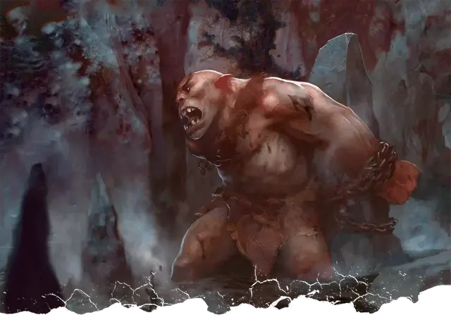

Костччи
Kostchtchie
Большое Исчадие (Демон), хаотично-злое, именной НИП

Класс Доспеха 16 (природный доспех)
Хиты 243 (18к10 + 144)
Скорость 40 футов
| мод | спас | ||
|---|---|---|---|
| СИЛ | 30 | +10 | +10 |
| ЛОВ | 12 | +1 | +9 |
| ТЕЛ | 27 | +8 | +16 |
| мод | спас | ||
|---|---|---|---|
| ИНТ | 18 | +4 | +4 |
| МДР | 22 | +6 | +14 |
| ХАР | 19 | +4 | +4 |
Навыки Восприятие +14, Выживание +14, Запугивание +12
Сопротивление урону огонь, электричество
Иммунитет к урону холод, яд; дробящий, колющий, рубящий от немагических атак
Иммунитет к состояниям отравление, очарование, испуг
Чувства истинное зрение 120 футов, пассивное Восприятие 24
Языки Бездны, Великаний, Телепатия 120 фт.
Опасность 25 (75000 опыта)
Бонус мастерства +8
Особенности
Врождённое колдовство. Базовой характеристикой Костччи является Харизма (Сл спасброска от заклинания 20). Он может накладывать следующие заклинания, не нуждаясь в материальных компонентах:
• Неограниченно: приказ [command]; тьма [darkness]
• 1/день каждое: рассеивание зла и добра [dispel evil and good], врата [gate], поражение [harm], телекинез [telekinesis], телепортация [teleport], хождение по ветру [wind walk];
Сопротивление магии. Костччи совершает с преимуществом спасброски от заклинаний и прочих магических эффектов.
Легендарное сопротивление (3/день). Если Костччи проваливает спасбросок, он может вместо этого сделать спасбросок успешным.
Действия
Мультиатака. Костччи совершает две рукопашные атаки: только одна из них может быть укусом.
Укус. Рукопашная атака оружием: +18 к попаданию, досягаемость 5 футов, одна цель. Попадание: 13 (1к6 + 10) колющего урона.
Маталоток (Боевой молот). Рукопашная атака оружием: +18 к попаданию, досягаемость 10 футов, одна цель. Попадание: 19 (2к8 + 10) дробящего урона или 21 (2к10 + 10) если используется двумя руками и оружие испускает волну холода, наносящую 10 (3к6) урона холодом каждому существу в пределах 30 футах от цели.
Легендарные действия
Костччи может совершить 3 легендарных действия на выбор из перечисленных ниже вариантов. Лишь одно легендарное действие может быть совершено за один раз, и только в конце хода другого существа. Костччи восстанавливает истраченные действия в начале своего хода.
Атака. Костччи совершает одну рукопашную атаку оружием.
Рывок. Костччи перемещается на свою скорость
Проклятье (стоит 2 действия). Костччи проклинает одно существо, которое он может видеть в пределах 60 футов. Проклятое существо получает уязвимость ко всему урону наносимого Костччи, до конца следующего хода Костччи.
Описание
Повелитель демонов Костччи напоминает приземистого холмового великана с короткими кривыми ногами и головой грубой формы.
Ледяные великаны, которые оставляют своих богов и обращаются к поклонению демонам, могут призвать Костччи с помощью кровавых подношений, оставленными на алтарях из тесаного льда. Если повелитель демонов решит ответить на зов великанов, он некоторое время охотится и сражается бок о бок с ними, заражая ледяных великанов диким безумием и жаждой крови, прежде чем отравится обратно в Бездну.
Любимое оружие Костччи — Маталоток [Matalotok], боевой молот, выкованный богом морозных великанов Тримом.